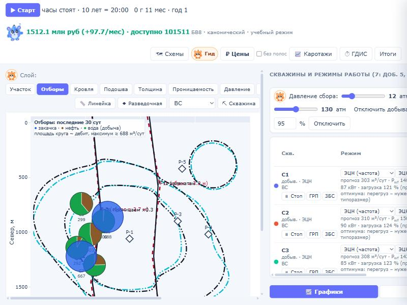
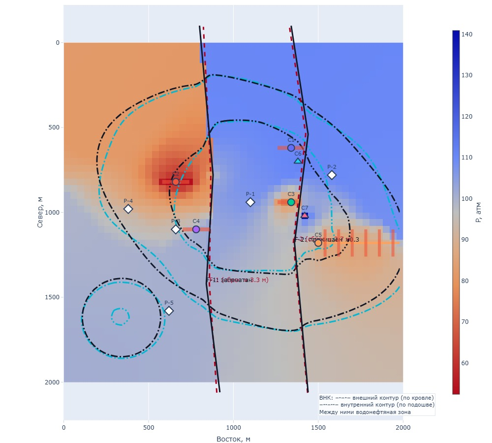

flowchart LR
subgraph T["Часть I. Теория и устройство игры"]
direction TB
A1["1. Месторождение с нуля"] --> A2["2. Закон Дарси"] --> A3["3. Нефть и вода: ОФП"]
A3 --> A4["4. Как считает симулятор"] --> A5["5. Скважины и оборудование"]
A5 --> A6["6. Геология, разведка, ГДИС"] --> A7["7. Экономика и оценка"] --> A8["8. Игра изнутри"]
end
subgraph P["Часть II. Практика разработки"]
direction TB
B0["9. Алгоритм игры"] --> B1["10–15. Разборы объектов"] --> B2["16. Задания"]
end
T --> P
Нефтяша: разработка месторождения на симуляторе
Интерактивное методическое пособие
Предисловие


«Нефтяша» – учебная игра-симулятор разработки нефтяного месторождения. За 20–40 минут вы проживаете десять лет жизни залежи: разведка, сейсмика, бурение, закачка воды, подбор насосов, деньги – и в конце отчёт с оценкой по сравнению с эталонной разработкой. Под капотом – настоящий двухфазный гидродинамический симулятор: те же уравнения, что в промышленных пакетах, только в 2D и с понятными упрощениями.
Это пособие объясняет, что считает игра, почему месторождение отвечает на ваши решения именно так и как играть осмысленно, а не наугад. Оно рассчитано на студентов направления «Разработка нефтяных и газовых месторождений»: мы начинаем почти с нуля, но не останавливаемся на картинках – доходим до формул, кода и численных опытов.
Как устроено пособие
- Часть I – теория: от пористости и проницаемости до схемы IMPES, формулы Писмана, узлового анализа насоса и ЧДД. Каждая формула привязана к тому месту игры, где она работает.
- Часть II – практика: общий алгоритм игры («что за чем делать») и шесть разборов – по одному на тип объекта. В каждом разборе считаются несколько вариантов разработки на настоящем ядре игры, и вы видите, какой лучше и почему.
- Приложения – шпаргалка формул и справочник функций для живых ячеек.
Интерактивность: как с ней работать
В пособии три вида интерактивных элементов:
Виджеты с ползунками. Меняете параметр – график или карта пересчитываются сразу. Код виджета можно раскрыть кнопкой «Код».
Расчёты на ядре игры. Карты давления и насыщенности, дебиты и деньги считает тот же код, что в index.html игры (с ускорителем WebAssembly). Расчёт нескольких лет занимает секунды, ход виден по полосе прогресса.
Живые ячейки кода. Python (в браузере через Pyodide) или JavaScript с ядром игры: код можно редактировать и запускать кнопкой «▶ Запустить» или Ctrl+Enter. «↺ Сбросить» возвращает исходный текст.
Попробуйте прямо сейчас – эта ячейка на ядре игры создаёт объект БВ8, бурит две скважины и считает год:
const f = neft.field({ scenario: "bv8" }); // объект БВ8 (Самотлор), сид 0
f.drill({ x: 1000, y: 1000, type: "prod" }); // добывающая в центре участка (x, y в метрах)
f.drill({ x: 700, y: 1000, type: "inj" }); // нагнетательная в 300 м западнее
await f.runAll(1); // один год
print(neft.engineInfo());
show(neft.map(f, { layer: "Sw", title: "Насыщенность через год" }));
УведомлениеЧто нужно для работы
Современный браузер (Chrome, Firefox, Edge, Safari) и доступ в интернет: библиотеки графиков (Observable Plot) и Python (Pyodide) загружаются из CDN. Первый запуск Python-ячейки занимает 10–30 секунд, дальше – мгновенно.
Где взять игру
- Онлайн: https://dmitryvoronin.gitverse.site/neftesim_neftyasha/
- Локально: скачайте репозиторий и откройте
index.html– сеть и сервер не нужны.
Само пособие: интерактивная версия – https://dmitryvoronin.gitverse.site/neftesim_neftyasha/manual/, печатная – PDF.
Рекомендуемый порядок: прочитайте главы 1–3, сыграйте одну партию на БВ8 в учебном режиме, затем читайте главы 4–7 и разборы части II – и сыграйте снова. Разница в оценке обычно бывает заметной.
Сборка пособия
Пособие написано на Quarto и лежит в папке manual/ репозитория игры. Перед каждой сборкой скрипт tools/sync-core.mjs берёт ядро расчёта прямо из index.html, поэтому пособие всегда считает той же версией физики, что и игра:
cd manual
quarto preview # просмотр с автообновлением
quarto render --to html # 1. HTML-версия
node tools/freeze.mjs # 2. снимки виджетов и живых ячеек для PDF (Chrome без окна)
quarto render # 3. HTML и PDF – в manual/_bookШаг 2 нужен, только когда менялись виджеты или ядро: снимки лежат в images/frozen/ и хранятся в репозитории.